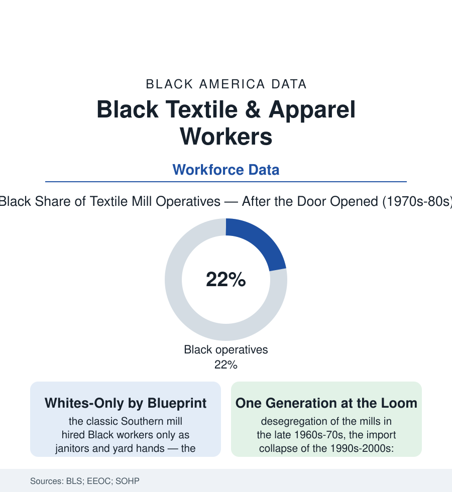

Black Employment
The Mills: Textile Work, the Color Line at the Loom, and the Industry That Left
The Southern textile mill was built as a white workplace by design; Black workers entered the loom line a generation before the industry left for overseas. The mill file.

The Southern textile mill was the region's industrial engine for a century, and it was built — deliberately, as a matter of stated policy across the industry — as a white man's workplace: the mills that carded, spun, and wove the South's cotton hired Black workers to sweep the floors and tend the yards, and reserved the operative jobs at the looms for white families in the mill villages the companies owned. The industry's desegregation and its disappearance then arrived within a single generation of each other. This article reads the mill file.
The Village and the Line
The mill system's social architecture is documented in the industry's own record and the oral histories: the mill village (company houses, company store, the mill church and school) housing a workforce recruited from the hill farms as an explicitly racial bargain — the industry's founders promising poor white families a wage, a house, and a color line at the factory gate, in a South where the cotton field outside the fence was worked by Black hands whose product the mill then processed. Inside, the job ladder was racial by department in the personnel data's surviving form: the spinning and weaving rooms white, the opening and yard and janitorial crews Black, the wage and promotion lines drawn to match — a structure the federal government encountered when Title VII arrived in the mid-1960s and the EEOC's early textile cases and consent decrees pried the operative lines open mill by mill across the late 1960s and 1970s. The workers who crossed in that first generation remember the crossing in the oral history collections in detail: the training withheld and improvised around, the production standards as weapons, the seniority systems rewritten to hold the old order inside the new one's forms — and, steadily, the paycheck: the mill wage at the region's industrial top for workers without diplomas, the Black operative's income entering the census rows of the mill counties as the first factory money many families had ever held.
The Organizing and the Leaving
The union file runs on the same rails: the mills' legendary resistance (the industry's South built partly on right-to-work laws and the defeated general strikes of the 1930s — the Gastonia and Marion massacres of 1929 in the labor canon), the J.P. Stevens campaign of the 1970s (the boycott, the Crystal Lee Jordan story the country learned as Norma Rae — the organizing file's most famous chapter, its workforce by then substantially the Black women of the Roanoke Rapids mills), and the Amalgamated Clothing and Textile Workers' Southern beachheads won just as the economics turned. The turn is the import data: the apparel and textile trade deficits of the 1980s deepening through the 1990s (NAFTA and then China's WTO accession in the industry studies' periodization), the mill employment curve collapsing from its hundreds of thousands to a fraction within two decades in the BLS series — the Carolinas' mill counties' unemployment and disability data recording the landing, the last generation at the loom retiring into a labor market with no second factory. The racial arithmetic of the collapse closed the file's bitter loop: last hired into the operative lines, the Black mill workforce stood thinnest in the seniority the layoffs honored, and the wealth the brief factory generation had begun to bank (the houses bought off the village system, the children sent to the HBCUs) met the plant gate's final closing within the same mortgage's term in family after family of the mill-county record.
Reading the Mill Data
A century of exclusion, a generation of inclusion, and an exit: the textile file is the employment section's purest lesson in timing — that a door opened late into a room already emptying is a specific kind of justice, and the data keep its measure exactly. The looms are silent in the mill counties now. The villages remain, the surnames in their mill-hill cemeteries sorted by the old line in death as in hiring. The census counted the operatives for one generation. It is enough to prove they were there, and what it cost that they weren't, sooner.
More in Black Employment
The Black Unemployment Rate: The Two-to-One Pattern
Black unemployment runs at roughly twice the White rate — 5.5 percent against 3.3 percent in annual averages — a ratio stable across five decades of federal data. How it is measured and why it persists.
Black Median Weekly Earnings: The 80-Cent Ratio
Black full-time workers earn a median of about $900 a week — roughly 80 cents for every dollar White workers earn. The BLS earnings data by group, gender, and occupation.
Black Labor Force Participation: Working at National Rates
Black labor force participation runs at roughly the national rate — and Black women participate at higher rates than White women. The BLS participation data.
Source: U.S. Bureau of Labor Statistics; U.S. Department of Labor textile industry studies; Southern Oral History Program mill collections; Equal Employment Opportunity Commission historical records.